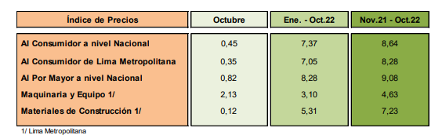
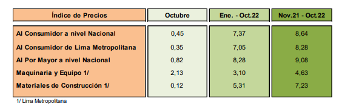

Estadistica sobre los precios

Ante el alza de precios de algunos productos de primera necesidad y el incremento en los costos de servicios, las familias peruanas vienen buscando múltiples estrategias para hacerle frente a esta situación que no se concentra únicamente en nuestro país.
Comienza ahoraPara el economista, y docente de la Universidad César Vallejo, Juan Sevillano Gamboa; este incremento es un fenómeno global y países como Estados Unidos también vienen experimentando una inflación que ha sobrepasado el 5% a comparación de junio del año pasado. En el caso de Chile y Colombia, la inflación asciende a un % 3.


Para el economista y profesor de ESAN, Jorge Guillén, no es la solución porque los consumidores peruanos están acostumbrados a un tipo de canasta básica, por lo que, dice, no necesariamente habrá una perfecta sustitución. Además, advierte que hay productos que no pueden ser reemplazados.
Para Von Hesse, lamentablemente, no hay nada que hacer en el tema de los factores externos, menos de un día para otro. Agrega que, en esta coyuntura, el Gobierno no debe caer en la tentación del populismo barato con medidas como prohibir importaciones y poner aranceles.
El Instituto Nacional de Estadística e Informática (INEI) informó que, en el mes de julio del presente año, el Índice de Precios al Consumidor de Lima Metropolitana se incrementó en 0,94%, con una variación acumulada de los siete primeros meses de 5,42% y la de los últimos doce meses (agosto 2021 – julio 2022) alcanzó 8,74%.
Dirigete a esta información

Señaló que entre enero a mayo (meses de cosecha) de este año el kilo de papa llegó a costar S/0.70, y la arroba (unidad de medida por mayor) a S/6. Sin embargo, para este mes de octubre, los acopiadores, intermediarios o revendedores comercializarían el producto hasta en S/3.50 el kilo de papa. Esto llevaría a que un minorista, bodega o mercado local oferte el producto hasta en S/6, confirmando lo que para el MIDAGRI es especulación.

Hace un seguimiento a los precios de los productos alimentarios comercializados a nivel mundial, registró un aumento del 12,6% entre febrero y marzo, alcanzando el nivel más alto desde su creación en 1990.
Manifestó ayer que la próxima semana habrá “sorpresas” con los precios de los alimentos y del gas, los cuales se han visto afectados por una reciente inflación. Según el INEI, el índice de precios al consumidor (IPC) de Lima Metropolitana aumentó en 1,01% en julio.

Estas son las preguntas más frecuentes referente a el alza de los precios en los productos alimenticios.
Con el alza constante de los precios, el capital de trabajo de los bodegueros ha sido afectado. Ahora no les alcanza el dinero para reponer sus productos y han tenido que disminuir sus compras. “Esto ha generado que trasladen este mayor costo a los precios en sus productos”, indica Silupú. Además, el reajuste constante de los precios hace que los clientes busquen opciones más económicas, lo cual perjudica a los comerciantes que tienen un ‘sobrestock’ de productos costosos, lo que les genera mayores pérdidas, si no los venden antes de su vencimiento, detalla la economista.
Los precios de los productos que se ofrecen en el mercado se fijan libremente, a través de la competencia entre las empresas. Por tanto, el precio de los productos o servicios variará según exista mucha o poca oferta o demanda. Siendo la oferta, el número de vendedores que hay en el mercado.
Para mantener protegido al Perú del fantasma de la inflación, es crucial mantener la independencia del BCRP respecto al Ejecutivo. Al mismo, tiempo, es preciso definir cuál será el rol de la inversión privada en este Gobierno y brindar a los inversionistas más seguridad y accesibilidad.
La ley de la demanda es la relación inversa existente entre el precio de un bien y la cantidad demandada, en el sentido de que, cuando se reduce el precio, aumenta la cantidad demandada, mientras que, cuando aumenta el precio, se disminuye la cantidad demandada.
Informate ahora